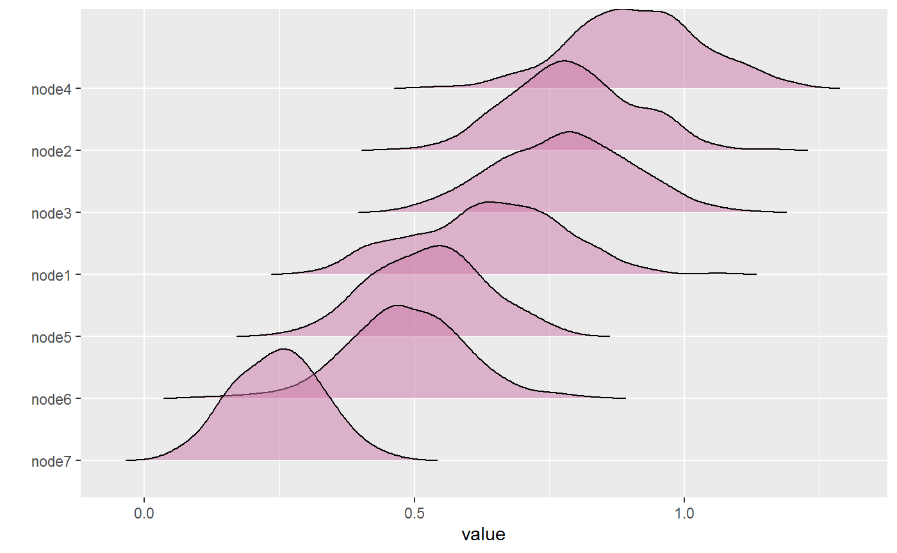
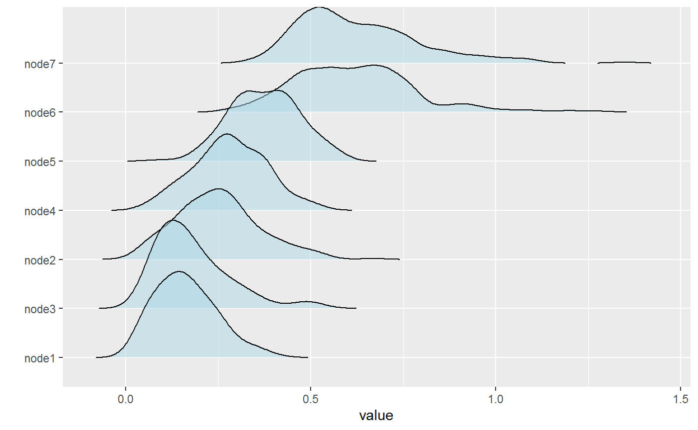

Custom Network Statistics
Donny Williams
5/19/2020
netstat_custom.RmdBackground
This vignette describes a new feature to BGGM (2.0.0) that allows for computing custom network statistics (e.g., centrality). The new function is called roll_your_own and it was suggested by a user of BGGM (see feature request here).
Basic Idea
The basic idea is to compute the chosen network statistic for each of the sampled partial correlations, resulting in a distribution. All that is required is to define a function that takes either a partial correlation matrix or a weighted adjacency matrix (the partial correlation matrix with values set to zero) as the first argument. Several examples are provided below.
R packages
# need the developmental version if (!requireNamespace("remotes")) { install.packages("remotes") } # install from github remotes::install_github("donaldRwilliams/BGGM")
Data
In all examples, a subset of ptsd data is used. The subset includes two of the “communities” of symptoms (details for these data can be found in Armour et al. 2017). The data are ordinal (5-level Likert).
Fit Model
For these data, the GGM is estimated with a semi-parametric copula (Hoff 2007). In BGGM, this implemented with type = mixed which is kind of a misnomer because the data do not have to be “mixed” (consisting of continuous and discrete variables). Note that the model is fitted only once which highlights that only the posterior samples are needed to compute any network statistic based on the sampled partial correlation matrices.
Examples
Expected Influence
The first example computes expected influence (Robinaugh, Millner, and McNally 2016). The first step is to define a function
# define function f <- function(x,...){ networktools::expectedInf(x,...)$step1 }
Note that x takes the matrix which is then passed to expectedInf. The ... allows for passing additional arguments to the expectedInf function. An example is provided below. With the function defined, the next step is to compute the network statistic.
# iter = 250 for demonstrative purposes # (but note even 1000 iters takes less than 1 second) # compute net_stat <- roll_your_own(object = fit, FUN = f, select = FALSE, iter = 250)
net_stat## BGGM: Bayesian Gaussian Graphical Models
## ---
## Network Stats: Roll Your Own
## Posterior Samples: 250
## ---
## Estimates:
##
## Node Post.mean Post.sd Cred.lb Cred.ub
## 1 0.701 0.099 0.508 0.871
## 2 0.912 0.113 0.722 1.179
## 3 0.985 0.112 0.742 1.199
## 4 1.056 0.105 0.851 1.247
## 5 1.056 0.116 0.862 1.288
## 6 0.491 0.092 0.329 0.679
## 7 0.698 0.098 0.521 0.878
## ---The option select = FALSE indicates to compute the statistics from the partial correlation matrices (nothing set to zero). This can be changed with select = TRUE. Internally, each of the sampled partial correlation matrices is multiplied by the adjacency matrix.
net_stat <- roll_your_own(object = fit, FUN = f, select = TRUE, iter = 250)
net_stat## BGGM: Bayesian Gaussian Graphical Models
## ---
## Network Stats: Roll Your Own
## Posterior Samples: 250
## ---
## Estimates:
##
## Node Post.mean Post.sd Cred.lb Cred.ub
## 1 0.636 0.136 0.386 0.874
## 2 0.792 0.113 0.580 0.996
## 3 0.777 0.122 0.544 1.001
## 4 0.910 0.121 0.667 1.143
## 5 0.525 0.104 0.331 0.727
## 6 0.484 0.110 0.270 0.686
## 7 0.247 0.081 0.088 0.412
## ---The results are then plotted with
plot(net_stat)

Bridge Strength
The next example computes bridge strength (Jones, Ma, and McNally 2019). This requires the user to define clusters or “communities”.
# clusters communities <- substring(colnames(Y), 1, 1) # function is slow f <- function(x, ...){ networktools::bridge(x, ...)$`Bridge Strength` } # compute net_stat <- roll_your_own(object = fit, FUN = f, communities = communities, iter = 250)
Notice communities. This is passed to ... in the function, f, which, in turn, is passed to the function bridge. Any number of arguments can be passed this way. Here are the results
net_stat## BGGM: Bayesian Gaussian Graphical Models
## ---
## Network Stats: Roll Your Own
## Posterior Samples: 250
## ---
## Estimates:
##
## Node Post.mean Post.sd Cred.lb Cred.ub
## 1 0.162 0.082 0.035 0.347
## 2 0.250 0.113 0.061 0.501
## 3 0.180 0.104 0.049 0.480
## 4 0.280 0.098 0.090 0.480
## 5 0.375 0.093 0.196 0.558
## 6 0.617 0.166 0.339 1.002
## 7 0.628 0.166 0.400 1.025
## ---which can then be plotted
plot(net_stat, fill = "lightblue")

Assortment
The next example computes assortment (Newman 2003).
# clusters communities <- substring(colnames(Y), 1, 1) # define function f <- function(x,...){ assortment.discrete(x, ...)$r } net_stat <- roll_your_own(object = fit, FUN = f, types = communities, weighted = TRUE, SE = FALSE, M = 1, iter = 250)
This example demonstrate that ... can take several arguments.
net_stat## BGGM: Bayesian Gaussian Graphical Models
## ---
## Network Stats: Roll Your Own
## Posterior Samples: 250
## ---
## Estimates:
##
## Post.mean Post.sd Cred.lb Cred.ub
## 0.261 0.124 -0.01 0.469
## ---The results are stored in the net_stat object. They can be accessed with
hist(net_stat$results, main = "Assortment")

Note
The function roll_your_own is expecting the custom function to return either a single number or a number for each node. This ensures all the printing and plotting functions work. However, you could return anything you want and then access the results to plot, summarize, etc.
References
Armour, Cherie, Eiko I Fried, Marie K Deserno, Jack Tsai, and Robert H Pietrzak. 2017. “A Network Analysis of Dsm-5 Posttraumatic Stress Disorder Symptoms and Correlates in Us Military Veterans.” Journal of Anxiety Disorders 45: 49–59.
Hoff, Peter D. 2007. “Extending the Rank Likelihood for Semiparametric Copula Estimation.” The Annals of Applied Statistics 1 (1): 265–83.
Jones, Payton J, Ruofan Ma, and Richard J McNally. 2019. “Bridge Centrality: A Network Approach to Understanding Comorbidity.” Multivariate Behavioral Research, 1–15.
Newman, Mark EJ. 2003. “Mixing Patterns in Networks.” Physical Review E 67 (2): 026126.
Robinaugh, Donald J, Alexander J Millner, and Richard J McNally. 2016. “Identifying Highly Influential Nodes in the Complicated Grief Network.” Journal of Abnormal Psychology 125 (6): 747.